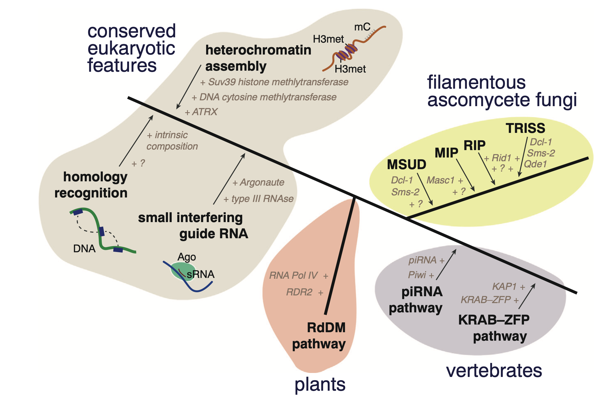

Thomas Badet
Lecturer · Evolutionary genomics · University of Neuchâtel
I specialize in understanding how organisms adapt and evolve at the genetic level. My work combines genetics, genomics, and evolutionary biology to uncover how changes in DNA help species respond to environmental challenges. I use big-data analysis and comparative methods to study genome dynamics across many species and populations, applying new computational tools and frameworks to detect patterns of genetic change and their impact on traits.
Recent work

The fungal RIP hypermutator mechanism has deep eukaryotic roots.
Link to paper →
Phylogenomic signatures of repeat-induced point mutations across the fungal kingdom.
Link to paper →
Recent reactivation of a pathogenicity-associated transposable element is associated with major chromosomal rearrangements in a fungal wheat pathogen.
Link to paper →Genomicist focusing on microbial fungi
I completed my PhD at the University of Toulouse (France) in 2017 under the supervision of Dr. Sylvain Raffaele, studying the genetic basis of plant–microbe interactions. I then joined the laboratory of Prof. Daniel Croll to develop expertise in evolutionary genomics, bioinformatics, and fungal biology, with a particular focus on the mechanisms generating and maintaining genomic variation. Since 2021, I have been a Maître-Assistant in the laboratory of Prof. Josephus Vermeer at the University of Neuchâtel, where I teach phytopathology and bioinformatics at Bachelor and Master levels. My research centers on the evolutionary forces shaping fungal genomes, particularly the interplay between transposable elements, genome defense mechanisms, and genome architecture in fungi.
Coevolutionary dynamics between transposable elements and host genome defenses
My research focuses on elucidating the evolutionary dynamics of microbial genomes, with particular emphasis on the impact of mobile genetic elements on genome architecture, function, and adaptability. Building on a foundation in plant pathology and further developed through evolutionary genomics, I employ a combination of experimental and computational methodologies to investigate the molecular interplay between mobile elements and genome defense systems.
Timeline
Lecturer
- Introduction to Phytopathology (BSc), Plant Pathology (MSc) and Bioinformatic Tools (MSc)
Postdoctoral researcher
- Contribution of transposable elements to fungal pangenome evolution
PhD in plant–microbe interactions
- Genome scale analysis of Arabidopsis thaliana quantitative disease resistance to the generalist fungal pathogen Sclerotinia sclerotiorum
Contact
Reach me
Email: thomas.badet@unine.ch
Institute of Biology
Rue Emile-Argand 11 | Office A313
University of Neuchâtel | CH-2000 Neuchâtel | Switzerland